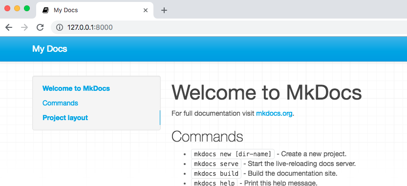

Usando MkDocs para generar páginas web
En este capítulo veremos como utilizar MkDocs, un software alternativo a Jekyll que destaca por su orientación a la creación de manuales técnicos.
Introducción a MkDocs
Una vez instalado el editor de textos en nuestro equipo, y redactados los primeros documentos en formato markdown, el siguiente paso sería subirlos a GitHub para que este genere el sitio web usando el conversor Jekyll.
Tenemos otra opción. Para experimentar y hacer pruebas, quizás lo mejor sea instalar Jekyll en nuestro ordenador. Una vez que estemos a gusto con el resultado, tendremos dos opciones: subir los archivos markdown originales y repetir el proceso de conversión con la ayuda de Github, o bien subir directamente los ficheros html creados en nuestra máquina con Jekyll.
El uso de un software conversor en el entorno local proporciona otras ventajas. Podremos hacer todas las pruebas que queramos sin necesidad de estar conectados a la red ni depender de tiempos de respuesta. Además, tendremos la libertad de cambiar de plataforma si algún día queremos migrar de GitHub a otro servicio. Bastará con mover los archivos html de un servidor a otro.
Otra ventaja es que, aunque Jekyll es seguramente el generador más popular por su potencia y versatilidad, no debemos olvidar que no es el único software existente para este propósito. Véase una lista de alternativas en esta página, y otra lista más completa aquí. Para crear manuales técnicos prefiero utilizar MkDocs, que me gusta por su sencillez y por estar muy orientado a la creación de documentación. Jekyll solo lo estoy usando para crear la página de portada.
MkDocs es un proyecto de software libre cuyo repositorio en GitHub es este. Las instrucciones de uso están aquí.
Instalación
La instalación de MkDocs en nuestro entorno local puede resultar un poco complicada para usuarios poco técnicos, así que vayamos por partes. Tenemos que instalar en nuestro ordenador tres piezas de software:
- python
- pip
- mkdocs
De todas formas, pip suele venir incluido de serie en las últimas versiones de python.
Instalando Python
MkDocs es un programa desarrollado en lenguaje de programación Python. Este tipo de software solo se puede ejecutar en nuestro ordenador si tenemos instalada la plataforma Python, que suele venir incluida de serie en sistemas Mac y Linux, y se distribuye en dos versiones, Python 2 y Python 3. Cualquiera de las dos nos sirve.
Podemos comprobar si tenemos Python en nuestro ordenador abriendo una ventana de terminal de comandos del sistema operativo y ejecutando lo siguiente:
python --version
Si obtenemos un mensaje de error, significa que hay que instalarlo. En caso contrario, hay que tener en cuenta que MkDocs requiere como mínimo la versión 2.7, por lo que si tenemos una anterior, habrá que actualizarla.
Para comprobar que tenemos la versión 3, hay que ejecutar el comando:
python3 --version
MkDocs requiere alguna versión a partir de la 3.4.
Si no tenemos Python, o queremos actualizarnos a una versión más reciente, podemos descargarlo desde su página web y ejecutar el programa instalador así obtenido.
Nota:
En Windows, debemos asegurarnos de añadir la carpeta de Python a la variable PATH del sistema. El proceso de instalación suele incluir una opción que debemos marcar para hacer esto automáticamente.
Instalar pip
MkDocs se puede descargar e instalar desde el repositorio oficial de programas Python. En las versiones más recientes de Python, contamos con un programa especial llamado pip que sirve para automatizar la tarea de instalar software desde ese repositorio.
Podemos comprobar si tenemos pip con el comando:
pip --version
Este software se utiliza para instalar programas Python con el comando:
pip install nombre_de_programa
Para actualizar pip a una versión más reciente se usa el comando:
pip install –-upgrade pip
Nota
El uso del comando pip requiere que nuestra cuenta de usuario tenga permisos para administrar el sistema. En sistemas Mac y Linux, debemos ejecutarlo como administrador:
sudo pip install nombre_programa
Una alternativa a esto consiste en ejecutar pip añadiendo el argumento user, lo que hace que el software que estamos instalando solo funcione en nuestra cuenta de usuario:
pip install --user nombre_programa
Instalar MkDocs
Una vez que tenemos python y el instalador de paquetes de software pip, para instalar MkDocs tenemos que ejecutamos el comando:
pip install mkdocs
Una vez hecho, comprobamos la versión instalada con el comando:
mkdocs --version
Nota:
Tanto pip como MkDocs se instalan en la carpeta de módulos de Python. Si en el path de nuestro sistema no se incluye la forma de acceder a esa carpeta, otra forma de ejecutar cualquier módulo es invocando python pasándole como argumento el módulo a ejecutar:
python -m mkdocs
El parámetro -m indica que lo que viene a continuación es un programa python ubicado en la carpeta de módulos.
Por ejemplo, para preguntar por la versión de mkdocs, el comando sería
python -m mkdocs --version
Y con Python 3:
python3 -m mkdocs --version
Primer proyecto
Una vez instalado MkDocs, podemos iniciar un proyecto desde el terminal de comandos del sistema operativo. Comenzamos por situarnos en la carpeta donde guardamos nuestros proyectos:
cd documentos/proyectos
Y ejecutamos el comando:
mkdocs new nombre
siendo “nombre” el que queremos dar al proyecto. Dentro de la carpeta actual se creará una subcarpeta con ese nombre para alojar los archivos.
Esa carpeta no ha nacido vacía. Se ha añadido de forma automática:
-
Un archivo de texto con la configuración del proyecto. Se llama
mkdocs.ymly consiste en una lista de variables de configuración, cada una de ellas en formato parámetro:valor. Para empezar, solo tiene una línea de texto con el título del proyecto, que podemos adaptar a nuestro gusto:site_name: Mi nuevo proyecto
-
Una subcarpeta
docsdestinada a ubicar los archivosmarkdown. Inicialmente hay un único fichero llamadoindex.mdque actuará como página principal. Contiene el siguiente texto “de pruebas”:# Welcome to MkDocs For full documentation visit [mkdocs.org](https://mkdocs.org). ## Commands * `mkdocs new [dir-name]` - Create a new project. * `mkdocs serve` - Start the live-reloading docs server. * `mkdocs build` - Build the documentation site. * `mkdocs help` - Print this help message. ## Project layout mkdocs.yml # The configuration file. docs/ index.md # The documentation homepage. ... # Other markdown pages, images and other files.
Nota:
Véase que tanto Jekyll como MkDocs utilizan un archivo en formato YML para recoger los parámetros del proceso de conversión. Jekyll usa el archivo _config.yml, y en MkDocs el nombre es mkdocs.yml. Los archivos YML son ficheros de texto para representar datos.
Generar el sitio web
Para generar las páginas web a partir de los documentos markdown, acudimos a la consola del sistema operativo, nos situamos en la misma carpeta que el archivo mkdocs.yml y ejecutamos el comando
mkdocs build
Esto crea una carpeta llamada site, cuyo contenido son las páginas de nuestro sitio web, y que subiremos al repositorio de GitHub. Cada vez que ejecutemos el comando mkdocs build estaremos reconstruyendo el contenido de esa carpeta site. A veces sucede que eliminamos archivos que en la versión HTML no se suprimen de forma automática. Para hacer limpieza debemos ejecutar el comando build añadiendo el parámetro --clean:
mkdocs build --clean
Visualizando el resultado durante la edición
MkDocs es capaz de generar páginas html “al vuelo” sin llegar a crear la carpeta site, permitiéndonos visualizarlas en nuestro navegador web para comprobar el aspecto final de lo que estamos escribiendo en el editor de texto.
Para ello, en el terminal de comandos del sistema nos situamos en la misma carpeta que el archivo de configuración mkdocs.yml, e introducimos el comando:
mkdocs serve
Se generará un sitio web temporal, y mkdocs quedará “a la escucha”. Cada vez que modifiquemos un archivo y lo guardemos, se refrescan los resultados. Esto se mantiene en funcionamiento hasta que pulsemos [Ctrl-C] sobre la consola:
INFO - Building documentation... INFO - Cleaning site directory [I 181010 16:48:41 server:292] Serving on http://127.0.0.1:8000 [I 181010 16:48:41 handlers:59] Start watching changes [I 181010 16:48:41 handlers:61] Start detecting changes
Para ver los resultados de esa compilación al vuelo, tenemos que abrir el navegador web e introducir la URL http://127.0.0.1:8000.

Cada vez que se modifique cualquier archivo, se guarden los cambios, y MkDocs refresque los resultados, la ventana del navegador se actualizará automáticamente.
Truco:
Arrastrando esa URL a la carpeta del proyecto, tendremos un enlace permanente en el que podemos pulsar para previsualizar la página de forma cómoda. Solo funciona mientras mkdocs serve se está ejecutando.
También podemos crear un script (en windows, un archivo batch) que contenga el comando mkdocs serve, y sobre el que podemos pulsar para que se ejecute sin necesidad de abrir manualmente una sesión de terminal:
cd miproyecto mkdocs serve
En Linux y Mac no olvidar proporcionar permisos de ejecución a ese archivo. Por ejemplo, si se llama prueba, lo hacemos con el comando:
chmod +x prueba
Añadir más páginas
Nuestro primer intento solo tiene una página que el generador convertirá en index.html. Para añadir más páginas a nuestro sitio web, basta con crear nuevos archivos markdown en la carpeta docs.
Los archivos markdown han de ser ficheros de texto con la extensión markdown, mdown, mkdn, mkd o md. MkDocs reconocerá cualquiera de ellas.
En principio, la estructura de carpetas podría ser algo así como:
mkdocs.yml docs/index.md docs/capitulo1.md docs/capitulo2.md site/
todo ello ubicado en la carpeta principal del proyecto. Podemos crear más niveles de subcarpetas para organizar los documentos markdown:
mkdocs.yml docs/index.md docs/capitulos/capitulo1.md docs/capitulos/capitulo2.md docs/anexos/anexo1.md site/
MkDocs convertirá todos los archivos markdown que encuentre en la carpeta docs, pero para añadirlos a la barra de navegación de nuestra futura página web, debemos crear una lista nav en el archivo de configuración mkdocs.yml:
site_name: Mi proyecto nav: - Inicio: index.md - Capítulo 1: capitulos/capitulo1.md - Capítulo 2: capitulos/capitulo2.md - Acerca de: acerca.md - Resumen de opciones: opc/opciones.md
Nota:
Cuando definimos parámetros en un archivo YML, cada uno ocupa una línea de texto. El valor asignado a cada parámetro, tras los dos puntos, puede ser un texto, un número, una fecha, o cualquier otro objeto. Si el valor es una lista, a la derecha de los dos puntos no se pone nada y los elementos de la lista se ponen a partir de la línea siguiente, sangrados y precedidos cada uno de ellos por un guión.
YML es un formato basado en el uso de sangrado para delimitar cada elemento. Dicho sangrado ha de ser el mismo para los elementos situados al mismo nivel. Se deben utilizar espacios en blanco, no permitiéndose los tabuladores.
La ubicación y nombre de archivos se escribe con referencia a la carpeta docs. Por ejemplo, index.md se refiere a miproyecto/docs/index.md.
El texto indicado a la izquierda de los dos puntos : se mostrará en la barra de navegación. A la derecha de los dos puntos se indica el archivo a asociar a esa entrada.
Podemos crear un segundo nivel desplegable de navegación creando subsecciones en la lista nav:
site_name: Mi proyecto nav: - Inicio: index.md - Capítulos: - Capítulo 1: capitulos/capitulo1.md - Capítulo 2: capitulos/capitulo2.md - Acerca de: acerca.md - Resumen de opciones: opc/opciones.md
Nótese que los nombre de subsecciones no deben llevar archivo alguno asociado tras los dos puntos :.
Los archivos markdown no incluidos en la lista nav se convertirán a HTML igualmente, pero no se mostrarán en la barra de navegación. La única forma de visualizarlos es insertar un enlace en otro documento.
La estructura y orden de los documentos en la barra de navegación es independiente de la estructura de carpetas. Si no especificamos una opción nav en el archivo de configuración, MkDocs incluirá en la barra todos los archivos markdown encontrados, ordenados alfabéticamente.
Página principal
En muchos sitios web es tradición que la página principal se llame index.html. MkDocs buscará un archivo que se llame index.md, o en su defecto, readme.md, convirtiendo cualquiera de los dos en index.html. Si existieran ambos archivos markdown, se ignorará readme.md.
Escogiendo un tema
La disposición del contenido de la página resultante, su aspecto final, tipo de letra, colores, etc, se corresponde con el “tema” seleccionado, que por defecto es “mkdocs”. Opcionalmente, podemos declararlo explícitamente en el archivo de configuración con el parámetro theme:
site_name: Mi proyecto nav: - Inicio: index.md - Acerca de: acerca.md - Resumen de opciones: opciones.md theme: mkdocs
Ya vimos en el caso de Jekyll que un tema es una colección de plantillas y archivos. En el caso de MkDocs, podemos examinar la lista de ficheros que componen este tema acudiendo a su repositorio. Como sucede con Jekyll, MkDocs tomará estos archivos y los unirá a nuestros documentos para generar las páginas web.
MkDocs proporciona dos temas internos (built-in) y la posibilidad de utilizar los creados por otras personas. Todos ellos pueden ser copiados a nuestro proyecto y adaptados a nuestro gusto. También podemos crear nuestro propio tema.
El otro tema proporcionado por MkDocs está inspirado en el que se usa por defecto en Read the docs. Podemos utilizarlo escribiendo lo siguiente en el archivo de configuración:
theme: readthedocs
Su aspecto es el siguiente:

Más adelante veremos como aplicar otros temas desarrollados por la comunidad.
El Favicon
Algunos navegadores muestran un pequeño icono para identificar la página. Por ejemplo, en la pestaña superior:

Por defecto, MkDocs usa el icono
Si queremos usar otro, crear una carpeta img junto a la de documentos, es decir, colgando de la carpeta principal del proyecto. Colocar allí un icono de nuestro gusto, y darle el nombre favicon.ico. MkDocs lo detectará automáticamente.
La ayuda de MkDocs
La guía de usuario está aquí.
Para un resumen de opciones, ejecutar el comando:
mkdocs --help
Para una rápida ayuda de un comando concreto, ejecutarlo añadiendo --help:
mkdocs build --help